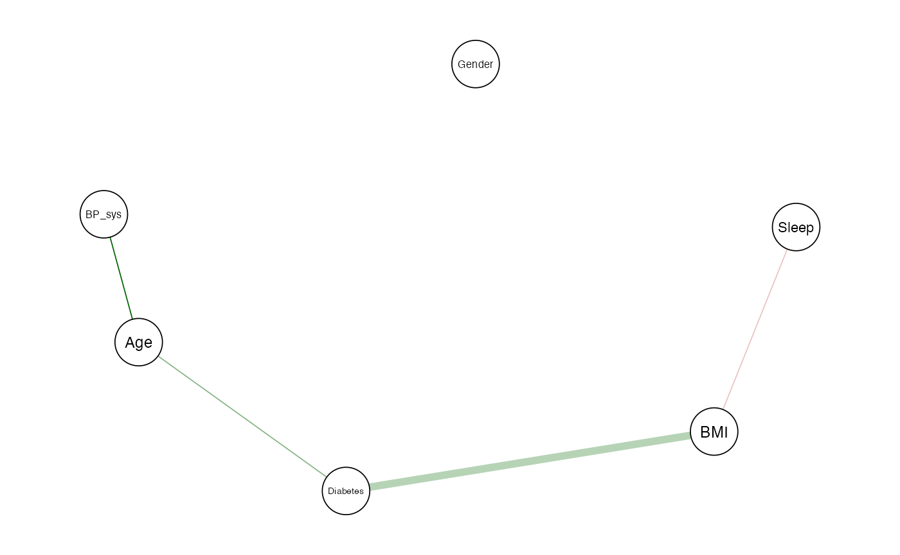

Example_Analysis.RmdIn this example, we illustrate the use of the BMGM
package to infer conditional independence relationships among mixed-type
variables using data from the NHANES study. Our model
can handle continuous, binary, and count variables, and allows for
missing values using a data augmentation strategy.
We select six variables from the NHANES dataset that are common in health studies:
We filter rows with at most 2 missing values to allow for imputation during inference.
set.seed(123)
data <- NHANES %>%
select(Age, Gender, SleepHrsNight, BPSysAve, BMI, Diabetes) %>%
filter(rowSums(is.na(.)) <= 2, Age > 18) %>%
mutate(
Gender = ifelse(Gender == "female", 1,
ifelse(Gender == "male", 0, NA)),
Diabetes = ifelse(Diabetes == "Yes", 1,
ifelse(Diabetes == "No", 0, NA))
) %>%
slice_sample(n = 300) %>%
as.matrix()Define the variable types:
We run the Bayesian mixed graphical model with default priors and 2,000 burn-in and sampling iterations. You can increase this number for more stable results.
fit <- bmgm(data, type = type, nburn = 2000, nsample = 2000, seed = 123)We use the qgraph package to visualize the graph. Edge
width corresponds to the strength of the relationship, and edge color
indicates direction:
qgraph(
fit$adj_Beta,
labels = var_names,
edge.color = ifelse(fit$adj_Beta > 0, "darkgreen", "firebrick"),
edge.width = abs(fit$adj_Beta)*2,
layout = "spring",
vsize = 6
)
BMI ↔︎ Diabetes
A strong positive edge indicates that BMI is highly
conditionally associated with the presence of diabetes. This supports
the well-established clinical link between higher body mass index and
type 2 diabetes.
Age ↔︎ Diabetes
A positive edge suggests that age is positively
associated with diabetes, even after adjusting for BMI and other
variables.
Age ↔︎ BP_sys (Systolic Blood Pressure)
A positive conditional relationship reflects the
expected pattern: as age increases, systolic blood pressure tends to
increase, consistent with physiological changes over time.
BMI ↔︎ Sleep
A weak negative edge implies a minor inverse
relationship between BMI and sleep duration. While small, this may hint
at patterns where higher BMI is associated with slightly lower average
sleep time.
Gender
Gender remains conditionally independent of the rest of the variables,
as it is disconnected in the estimated graph.
This model accounts for missing data via MCMC-based imputation and uses a spike-and-slab prior to identify sparse graphs, allowing meaningful discovery of variable interactions.
This vignette demonstrates how to use the BMGM package
to analyze real-world health data involving mixed variable types. The
method flexibly models continuous, binary, and count variables, and is
robust to small amounts of missing data. Future work may extend this
example to include zero-inflated variables or longitudinal data.